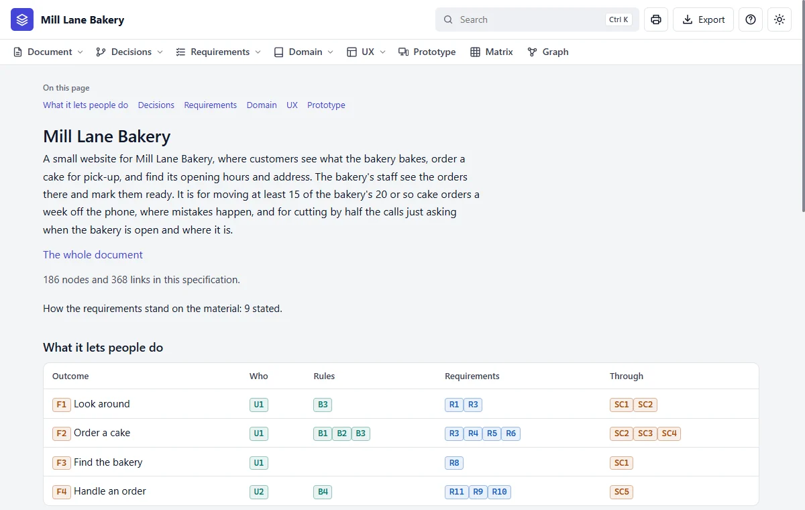

Step 8 of 20 · Make it
Open it in your browser
Say this
Say this to Claude
Open it in my browser.
What you see
Your specification, as a small website on your own computer. Nothing goes online.

- 1The name. Always brings you back here.
- 2Search for anything.
- 3Each word in this bar opens a part of the specification.
- 4186 facts and 357 links between them.
To open it yourself at any time, without Claude: go to the folder and double-click index.cmd on Windows, or run sh index.sh on a Mac or Linux.
To open the finished bakery from this tutorial, do the same in the skill's folder, in examples/bakery/specs.